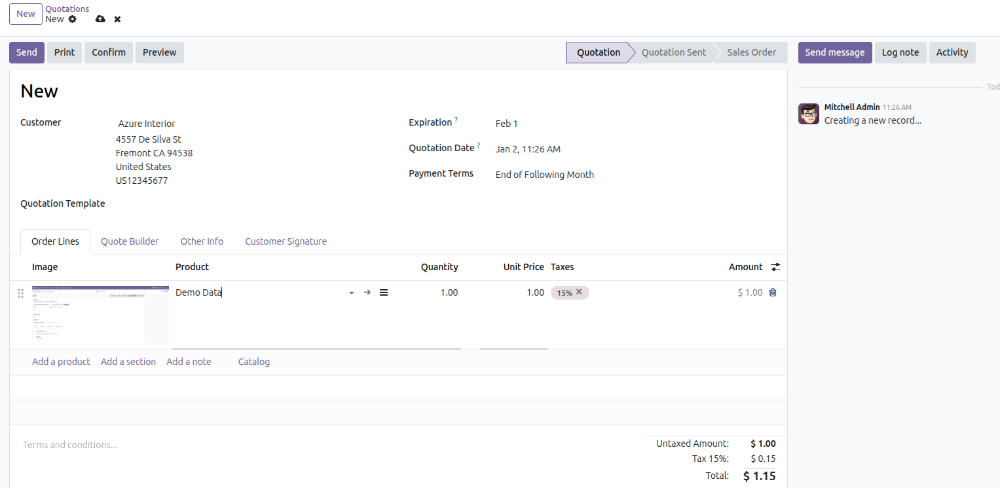
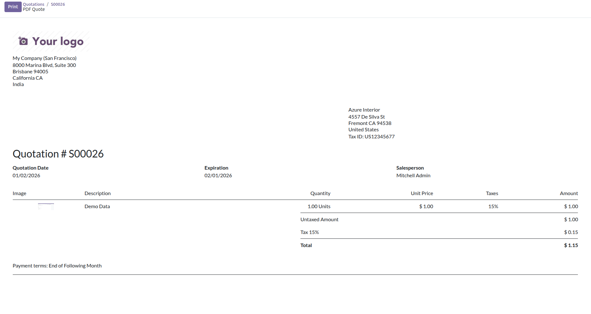

Inom Sale Order Line module automatically displays the product image whenever a product is selected in a sale order line. This feature enhances the sales order interface, allowing sales teams to instantly verify products visually and reduce errors.
With this module installed, every sale order line shows the corresponding product image both in the form view and in reports. It improves clarity, professionalism, and reduces mistakes during order creation.
Manually verifying product details in sale orders can be error-prone and time-consuming. Inom Sale Order Line module ensures that the product image is always visible, helping sales teams quickly identify the right product, avoid mistakes, and enhance the order process.
1. Create or open a sale order.
2. Add a new sale order line and select a product.
3. The product image appears automatically in the order line form.
4. In the sale order PDF report, the image is also displayed next to the product name.
Below are preview images of the module interface and functionality.


For support, bug reports, or customization requests, please contact us:
Email: info@inomerp.in
We provide a one-time setup and installation service completely free of cost on any Odoo-supported server. Our experienced technical team ensures proper installation, configuration, and deployment so you can start using the module smoothly without any technical complications.
Important Note:
Free support is provided for issues caused by the standard Odoo source code
related to this module. Any issues arising due to third-party modules,
custom developments, or compatibility conflicts are outside the scope of
free support and may be chargeable.
For demos, customization, or enterprise support, connect with our team:
https://www.inomerp.in/contactus